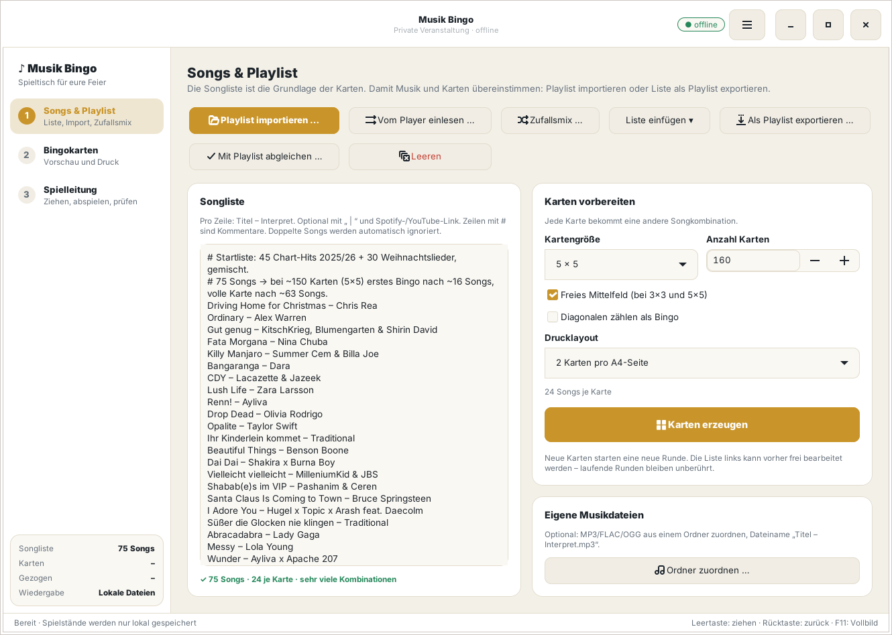
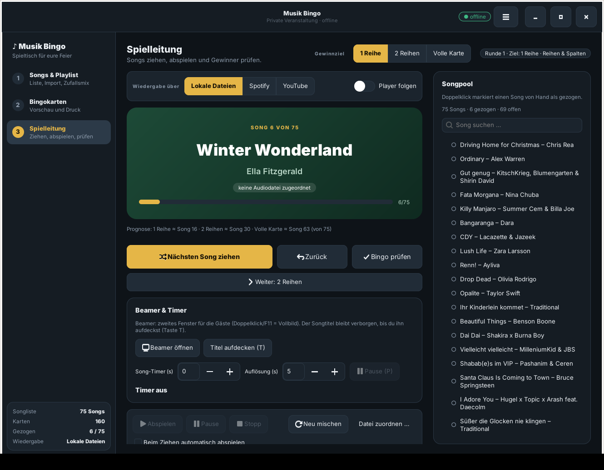
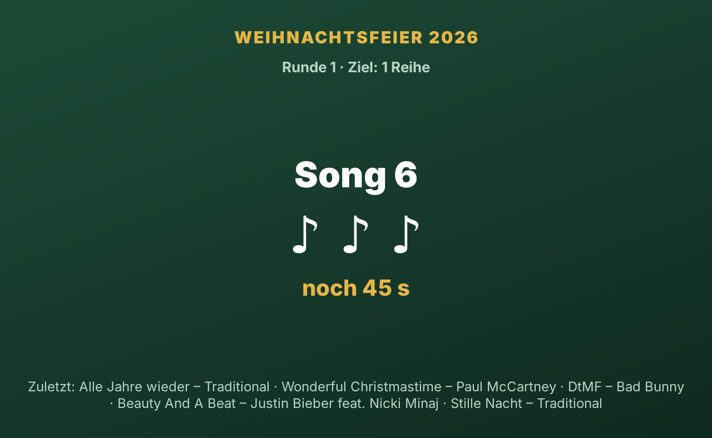
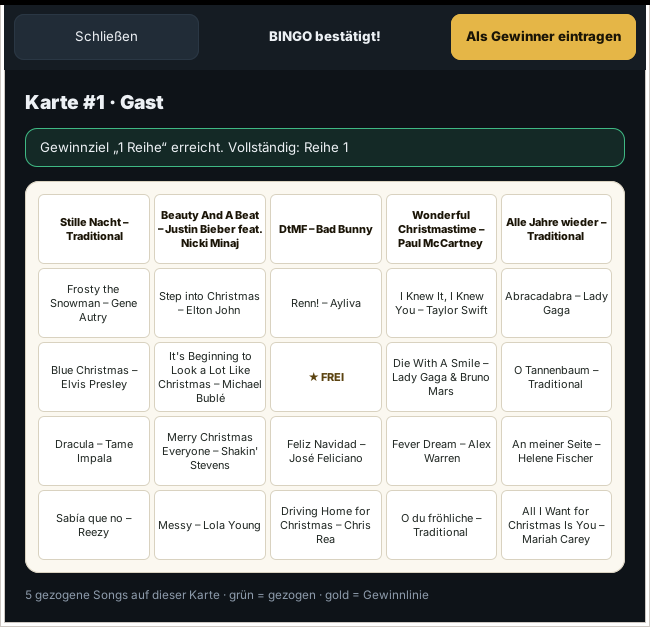

Runde 8–37 Min. je nach Liste und Format. Karten: Gäste + 15 %.
Songs laden, Karten drucken, Beamer und Spotify testen.
Leertaste = nächster Song. T deckt den Titel auf.
Kartennummer eingeben, Gewinner eintragen.
Songliste und Kartenformat bestimmen die Dauer – die Spielerzahl kaum
Eine Runde bis „Volle Karte“ dauert bei 15 s pro Song und 50 Songs 11–19 Minuten: 3×3 ist die kürzeste, 5×5 die längste Variante. Für eine Stunde spielt ihr mehrere Runden.
Typischer erster „Volle Karte“-Gewinner (Median aus 300 simulierten Spielen mit der Prognose der App). Kürzeste Variante: 3×3 mit 150 Spielern, längste: 5×5 mit 20 Spielern. Pro Song zusätzlich 5 s Auflösung + 5 s Puffer.
| Songliste | 15 s | 30 s | 45 s |
|---|---|---|---|
| 30 Songs | 8–12 | 12–19 | 16–26 |
| 50 Songs | 11–19 | 18–31 | 25–42 |
| 75 Songs | 17–28 | 27–45 | 38–62 |
| 100 Songs | 22–37 | 35–59 | 49–82 |
Beispiel 1 Stunde, 3×3: 4 Runden à 50 Songs (je ≈ 12 Min.) plus Ehrungen. 5×5 erst ab 50 Songs – bei 30 Songs gibt es oft 2–3 Gewinner gleichzeitig.
Am Tag davor oder spätestens 30 Minuten vor Start
Starte die App im Startmenü unter Spiele → Musik Bingo. Die Seiten wechselst du links in der Leiste.

Der Spielstand speichert sich selbst. Nach einem Neustart sind alle Karten und gezogenen Songs wieder da.
Eine Taste reicht im Normalfall
Drücke die Leertaste, und der nächste Song läuft – vorausgesetzt, „Beim Ziehen automatisch abspielen“ ist angehakt.
Ziehennächster Song
Titelauf dem Beamer aufdecken / verbergen (abschaltbar unter „Beamer & Timer“)
PauseSong-Timer anhalten / weiter
Zurückletzten Song zurücknehmen
Vollbildan / aus


Song-Timer: Spielzeit pro Song einstellen. Danach wird der Titel aufgelöst, und der nächste Song startet von selbst.
Kein Tab drücken. Sonst bedient die Leertaste einen anderen Knopf, zum Beispiel das Gewinnziel. Ein Mausklick ins Fenster behebt das. Pfeil-, Bild- und Pos1-Tasten tun auf der Seite Spielleitung nichts, solange nichts angeklickt oder per Tab angesteuert wurde.
Der Song-Timer hält beim Prüfen von selbst an
Nummer unleserlich? Im Dialog Ohne Kartennummer … wählen. Der Gewinner liest seine Songs vor, du hakst sie an, die App findet die Karte.

Regeln: Waagrecht und senkrecht zählen, diagonal nur, wenn beim Erzeugen „Diagonalen zählen als Bingo“ angehakt war. Gewinnen kann nur, wer anwesend ist und Bingo ruft. Jede Karte gewinnt pro Runde nur einmal, das prüft die App selbst.
Ruhig bleiben: Der Spielstand ist nach jedem Song gespeichert.
| Problem | Lösung |
|---|---|
| BEDIENUNGFalscher Song gezogen | Rücktaste oder Zurück |
| BEDIENUNGLeertaste reagiert nicht | Einmal mit der Maus ins App-Fenster klicken (auch auf einen Knopf). |
| MUSIKSpotify spielt nichts | Spotify-App öffnen, Play drücken. Warnung in der App beachten. |
| BEAMERBeamer-Fenster weg | Beamer öffnen erneut klicken. |
| TECHNIKApp hängt oder ist zu | Neu starten – alles ist wieder da. |
| TECHNIKOben steht „NICHT GESPEICHERT“ | Platz auf dem Laptop prüfen. Menü → Spielstand exportieren … auf einen USB-Stick. |
| TECHNIKLaptop ganz aus | Von Hand prüfen: Gewinnreihe gegen den Mitschreib-Zettel. |
Notfallplan: Eine Person schreibt jeden gezogenen Song mit Nummer mit. Fällt der Laptop aus, prüft ihr die Gewinnreihe gegen diesen Zettel.